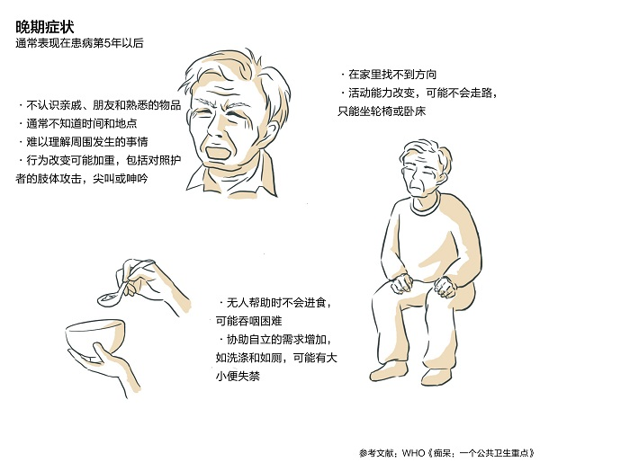

图5. 阿尔茨海默病的早中晚期症状

数据来源：WHO 《痴呆：一个公共卫生重点》
愤怒后的孤独
作家普拉切特在一次演讲中谈到自己被确诊阿尔茨海默病之后的心情，当第一反应的“令路西法对天堂的怒火相形见绌”的愤怒退去过后，是深刻的孤独、恐惧与荒凉——“就像你一个人站在海边，海浪不见了，所有的人也不见了。”
先死去的自我
在电影《依然爱丽丝》中，爱丽丝对自己身患阿尔茨海默病的描述是：“好的时候，我可以算是一个正常的人，但不好的时候，我觉得找不到自己……我不知道我是谁，不知道接下来会失去什么。”
作家大卫·申克将阿兹海默症比作棱柱体，它将死亡折射成一道各部分原本紧密结合的光谱——自主权之死、记忆之死、自觉之死、性格之死、肉体之死。
阿尔茨海默病患者在病程中其实经受着一场漫长的死亡，随着认知与记忆被逐渐吞噬，患者的“自我”在肉体死亡之前很早就已凋敝，
申克认为，这才是阿尔茨海默病所特有的悲伤与战栗的根源。
未逝去的感知
而心理学家Deborah Zaitchik对阿兹海默病的研究发现，很多病人的认知已经被损毁至学前儿童的水平，但他们的社会和道德推理能力却基本与普通的同龄人无异。
他们仍然能够感觉到悲哀、孤独、悲伤、不安，感觉到爱与被爱。
就像电影中因阿尔茨海默病而逐渐失去自我的爱丽丝，在结尾的迷雾中说出的却是：“我感觉到爱。”
那一刻，爱丽丝的眼神中迷惘和温柔交织，此时记忆与认知受损的她是否依然是爱丽丝或许并不需要一个准确的答案，
更重要的是一直以来被人们所忽略的，阿尔茨海默病患者仍然是一个能感知爱且需要爱的个体。
86.3%的人对阿尔茨海默病认知极为有限或更少。
虽然人们对阿尔茨海默病的俗称“老年痴呆”已经并不陌生，但是2019年WHO关于痴呆症认知的调查显示，
中低收入国家中86.3%的回答将痴呆认为是正常老化的表现，
且有86.3%的回答显示对痴呆综合征或与痴呆相关的疾病没有或只有极为有限的认识。
84.4%的患者因为出现症状才就诊，41.91%的患者被认为记忆力下降是老人自然衰老的过程而未及时治疗。
韦明的父亲在就诊前就已经开始认错自己的儿子，这是阿尔茨海默病发展到中后期的症状。
在病情发生的过程中，韦明其实每周末都会去看望老人，但是在短暂的相处时光里，子女难以注意到父亲身上慢慢发生的一些行为变化。
而长期陪伴父亲的母亲，却将父亲时常表现出的答非所问和行动迟缓当作人老了的正常现象，
而从未向家人提及。韦明说：“身边的人没有疾病知识，我们晚辈虽然知道这个病，却长期不在父母身边，也很难发现有问题。”
国际阿尔茨海默病协会（ADI）的报告提出，
最终导致痴呆症症状的大脑病理变化很可能早在人们第一次注意到症状之前就开始了。
例如，阿尔茨海默病的脑部变化可能在症状出现前至少20-30年内发生。
但是目前患者早期就诊的状况并不乐观，
中国阿尔茨海默病协会（ADC）发布的《2020中国阿尔茨海默病患者诊疗现状调研报告》显示，
在就诊原因方面，绝大多数患者因为出现症状才就诊，其中出现记忆减退、爱忘事、糊涂、不认识熟悉的人等现象成为就诊的首要原因（57.26%），
而参加体检或筛查项目从而进一步就诊的比例仅为10.06%。可见该疾病的相关筛查并不普及，难以借助筛查在病情恶化之前及时作出诊断，
很多情况下都是依靠患者家属发觉病症进而寻求治疗。
图6. 阿尔茨海默病患者初次就诊原因
数据来源：ADC《2020中国阿尔茨海默病患者诊疗现状调研报告》
再具体到出现症状到就诊的时长，55.83%的患者在出现症状7个月及以上才就诊。
在未及时就诊的原因方面，ADC的另一个报告则显示，
36.70%的患者和41.91%的家属都认为记忆力下降是老人自然衰老的过程，
没有必要治疗，可见公众对于疾病的认知不足是导致诊治不及时的一大原因。
图7. 阿尔兹海默病患者从出现症状到就诊时长
数据来源：ADC《2020中国阿尔茨海默病患者诊疗现状调研报告》
另外，哪怕是患者就诊之后，定期的复诊也难以保证。
报告显示，24.39%的患者从未复诊，36.6%的患者复诊频率在7个月及以上。
图8. 阿尔兹海默病患者复诊情况
数据来源：ADC《2020中国阿尔茨海默病患者诊疗现状调研报告》
20.26%的患者曾经服用、但已经停药，19.68%的患者从未服用药物。
冯平带母亲复诊时，距离初次就诊已经过去了两年。
这段时间里，冯平的母亲病情越来越重，愈发激越的脾气让家里人都难免煎熬，但是他们却从来没想过要再向医院求助。
而这些都是因为初次就诊时，医生只是面无表情地抛出一串问题，便对错愕的母亲开出了“老年痴呆”的诊断和一些保健品。
医生对冯平的父母说：“回家打麻将吧。”这一切都给冯平留下了无药可治的印象。
直到从朋友那里听说了服药的效果，冯平才带着母亲换家医院再次就诊。
“如果上次就采取干预手段，我母亲的病情应该比现在要好。”冯平说。
中国阿尔茨海默病协会主席、解放军总医院老年神经科医生王鲁宁曾指出，
导致我国阿尔茨海默病就诊率低、诊断率低和治疗率低“三低”困局的主要原因中，就包括医生对于这个疾病没有有效的认知。
在ADC采访的2038位患者中，只有60.06%的患者仍在服用抗痴呆药物，
而曾经服用、但已经停药的患者比例为20.26%，还有19.68%的受访患者表示自己从未服用过药物。
这一比例在中国农村要更加触目惊心，仅有28.90%的患者仍在服用药物，
而30.23%的患者曾经服用、但已经停药，高达40.86%的患者从未服用过药物。
图9. 中国阿尔茨海默病患者服药状况（全国、城市、农村对比）
数据来源：ADC《2020中国阿尔茨海默病患者诊疗现状调研报告》
阿尔茨海默病的药物对病情通常有重要的延缓作用，
但是注重疗效的患者和家属往往因为没有看到好转而不肯坚持吃药，这其实十分需要医生的正确引导。
在停药原因上，40.34%是源于患者及家属对病征和药物作用的不了解（26.75%认为治疗效果不好，13.59%担心药物副作用），
另外还有13.59%的患者在吃完之后就没有再去开药。
在未服药的原因上， 55.41%是源于患者及家属对病征和药物作用的不了解（23.72%认为病情不重，不需要治疗，
16.22%担心药物副作用，15.47%认为治疗效果不好），另外还有11.26%的患者是因为医生没有开药。
这些数字的背后是无数冯平母亲的故事，被延误的治疗里一部分是患者、家属对病征和药物作用的不了解，
另一部分便与医生作为引导者的认知不足和态度不当相关。
图10. 阿尔兹海默病患者服药状况及其原因
数据来源：ADC《2020中国阿尔茨海默病患者诊疗现状调研报告》